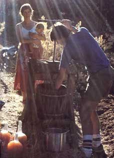
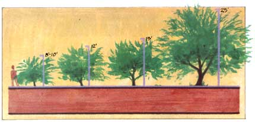
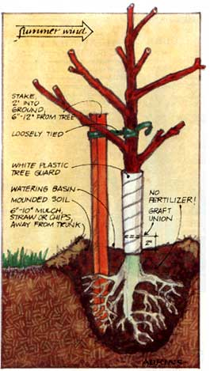
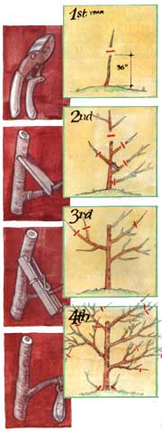
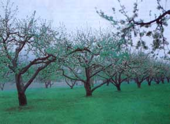
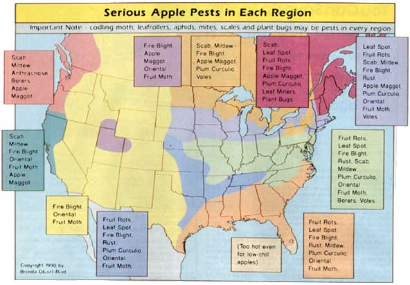

Issue # 125 - September/October 1990
A mini-handbook on varieties and how to grow them ecologically.
AN APPLE ORCHARD MAY BE the quintessential symbol of the good life in the country. What seems easier or more natural than plucking per fect, pesticide-free apples from trees you planted as saplings and lovingly watched grow over the years? In reality, apples are a demanding crop with many pest problems; commercial apple-growers don't apply 12 to 18 sprays a season because they enjoy spraying. But by carefully choosing apple varieties and rootstocks adapted to your area's climate and pests, by keeping trees healthy through good site selection and cultural practices, and by taking advantage of recent advances in biological control, you can grow high-quality, low-spray apples. Here in southeast Kansas, we produce bumper crops of more than two dozen varieties, almost free of serious disease or insect injury, by using just two early-season sprays.
Many people hold to the romantic idea that apples used to taste better in the "good old days," and just naturally resisted disease and worms. After all, orchardists didn't spray their trees back then, right? Wrong. Fruits were some of the first crops to be treated with pesticides - and back in the good old days of the late 1800s and early 1900s, they used lead arsenate. (Old appleorchard soil may still contain unsafe levels of lead today. In Colonial America, when apples weren't sprayed, every farm family had a 50-tree apple orchard to produce enough fruit for a year's supply of hard cider, the fermented drink that washed down every meal. The family could store the few pest-free apples for fresh eating and baking, but they tossed most into the cider grinder, oblivious to worms and surface diseases.
That's a good approach to follow today if you have the time and equipment to make cider, whether hard or sweet. But if you want apples for fresh eating, cooking and storing, choose each variety on its merits for those uses, as well as its disease resistance and climate adaptation, regardless of when it was developed. While there are a number of excellent older varieties, many other antiques are not woth growing today, because newer types have surpassed them. On the other hand, some of the latter-day improvements" were cultivated just for looks, transportability or fine flavor, but can be very disease susceptible. On the other other hand, all of the scab-immune apples (varieties so resistant to scab they don't get it at all, even during seasons when the disease is severe came from modem breeding programs.
When choosing apple varieties, note when they ripen and if they store well under refrigeration or in a root cellar, and for how long. Your apple harvest season can stretch as long as three or four months, starting with summer apples of July or August and lasting till first frost. Although the summer apples' flavor and quality aren't up to par with the best of the fall's, and the apples can only maintain firmness and flavor for a few weeks in the refrigerator, they provide a refreshing first taste of apple season. Where summers are hot, most summer apples appreciate some midday shade; excess heat causes mealiness and lack of sweetness.
Late-ripening apples tend to store the longest, up to six months under cool conditions. Several late ripeners, in fact-such as Arkansas Black, Golden Russet and Melrose-aren't really as good to eat when harvested; they must "mellow" in storage for a month or two in order to develop their fullest flavor and sweetness. When choosing your late-ripening apples, check the length of growing season they need, and make sure your area provides an average of at least that many frost-free days.
Time your apple harvests to suit your needs. If you don't want a deluge of fruit at any one time, choose varieties with ripening dates well-spaced over the season. Some varieties-those called dessert apples-are best eaten fresh, while others are better for cooking or baking. But since' many are great both ways, I'd choose mostly all-purpose varieties. In making cider, mix three or four of the best apples for this purpose; blending sweet and tart varieties will result in the most full-bodied flavor.
If you market apples, customers are sure to come in with requests for types they know. Investigate the ones they suggest, and plant some if they can be grown successfully in your area. If customers ask for disease-susceptible commercial varieties just because they know their names, let them sample some of the ones you've chosen. When I worked on a fruit and vegetable farm in New Jersey and customers came to the roadside market looking for Delicious or Rome apples, we'd let them taste the Northern Spy. Usually they'd agree that the Spy was much tastier, and buy a basket of that instead.
Rootstocks, like varieties, must be chosen carefully to suit your needs and conditions. The rootstock is essentially the bottom half of the tree-the root system and trunk upon which the apple variety is grafted. It largely determines the tree's size at maturity. Varieties grafted onto seedling rootstocks (usually grown from seeds discarded by canneries grow into standard-size apple trees, 25 to 30 feet tall. Dwarf or semidwarf trees result from grafting a variety onto a dwarfing rootstock-vegetatively produced by layering or cutting-that restricts the growth of the tree's top. Many different apple rootstocks are used by nurseries, each with its own adaptation, pest resistance or susceptibility, and degree of dwarfing.
Fully dwarf trees are generally best for both home and commercial orchards. These trees grow from seven to 10 feet tall and are easiest to harvest, prune and spray. They produce much higher yields per acre than larger trees, and allow you to grow nine different trees-a different variety each, if you like-in the space that one full-size apple tree would take up.
Some nurseries construct apple trees in three, rather than two, parts, and these are the trees I generally prefer. A six- to 12-inch-long stem piece called an "interstem," grafted between the rootstock and the variety, dwarfs the tree above, while the rootstock below is chosen for good anchorage and resistance to drought, diseases and pests.
For the healthiest trees and best crops, select a site where air flows freely and water percolates through the soil quickly. Avoid that fertile creek-bottom land: Waterlogged soil leads to root rot, and low areas that trap cold air create "frost pockets" that can kill blossoms in spring. Highly fertile soil induces overly vigorous vegetative growth that is difficult to control, more susceptible to fire blight and will delay the onset of fruiting. Once trees do start bearing, excess fertility produces softer fruit that's more prone to rot.
A gentle to moderate slope is usually the best site. A south-facing slope is useful for long-season varieties in shortseason areas, as it warms up sooner in spring, hasten ing bloom and harvest. A north-facing slope delays bloom and harvest, which is helpful for early-blooming apple varieties where late spring frosts often threaten (though in many areas, most apples bloom late enough to avoid frosts most years. Eastand west-facing slopes don't affect bloom or harvest time much, but western slopes are usually best avoided because they need more irrigation-especially in hot, dry climates-and because morning sun dries dew off the foliage quickly, lessening the risk of disease.
A source of irrigation water is essential during the first season after planting, and an irrigation system provides valuable drought insurance-especially for trees on shallow-rooted dwarfing rootstocks-throughout the life of the planting. A trickle system is the most water- and energy-efficient way to irrigate, but soaker hoses can be fine for a small, family apple orchard.
Strong winds will increase the trees' moisture needs and can whip young trees around in their planting holes, weakening them and leaving them vulnerable to pests. So where winds are strong, choose a site protected by existing plantings, or plant a windbreak. Place the windbreak so it diverts the prevailing winds of the windiest season, and is at least as far from the fruit planting as its ultimate height. In our region, a one- or two-row summer windbreak of deciduous trees south of a fruit planting helps minimize summer irrigation needs and windfallen fruit. Areas with harsher winters may need a two- or three-row winter windbreak-including a row of evergreens, usually pines or spruces-northwest of the orchard.
Before planting, test your soil and adjust the pH level to within the 6.0-to-8.0 range if needed. Add phosphorus or potassium only if your soil tests quite low for these nutrients. If your site lacks organic matter, you could turn under a green manure crop before planting, but don't build the soil up too much for apples. Establish a good legume-grass ground cover (we use white clover and fescue), or, if the site already has one, plant directly into it. Killing the sod around each newly planted tree with a heavy mulch or glyphosate (Roundup herbicide controls weeds, and the decaying ground-cover roots boost tree growth. Later, once the trees are established, you can plant wildflowers in the tree rows between the ground-cover strips, to attract beneficial insects.
In most areas you can plant apples either in early spring or late fall, while the trees are dormant. Fall planting enables roots to become better established before new leaves start demanding water in spring, but in colder zones fall planting risks winter injury to the not-yet-settled trees. Plant them the day you get them, if possible.
Fill your planting holes only with what you just dug out of them. Do not add any nitrogen fertilizers-no chemical fertilizer mixes, fresh manures, blood meal, etc.-since they can burn young roots. Adding organic matter to the planting hole is not as helpful as improving the entire area with a good ground cover. In clay soils, organic amendments in the planting hole can actually be harmful, because roots and water will then tend to stay in the looser soil of the hole instead of penetrating the heavier native soil. Without deep roots, the trees are more susceptible to drought, and impeded water drainage beyond the planting hole can lead to root rot.
Set trees a few inches deeper than they grew in the nursery, to reduce root suckering. Keep the graft union of trees on dwarfing rootstocks an inch or two above the soil; if the union were buried, the variety could root and overcome the rootstock's dwarfing effect. Set interstem trees with the interstem piece half above and half below the soil. Set all trees so the curved part above the graft is facing into the direction of prevailing summer winds. After filling the hole, build a slight mound around the tree with additional soil and make a watering hole in this mound a few inches away from the tree's trunk. Water newly planted trees often.
Apple trees on poorly anchored, fully dwarfing rootstocks need to be tied to .sturdy stakes so the wind doesn't blow them over. A fence post or two-inch-thick, decayresistant wooden post, five feet tall, makes a good stake. Drive the post 18 inches into the ground, six to 12 inches away from the tree. Tie the tree loosely to the stake with soft material in a figure-eight loop, so you don't girdle the tree. Trees on standard or semidwarfing rootstocks don't need staking, and neither do interstem-dwarfed trees.
Protect tree trunks from winter sunscald, borer insects and rodents by wrapping white plastic tree guards around them, sinking the guards an inch into the soil. Remove these when the tree's branches and leaves have grown enough to shade the trunk. Another way to prevent sunscald and borer damage is to paint the trunk with white interior or exterior latex paint diluted half-and-half with water. A 14-inch-tall wire-mesh guard around each tree, sunk two inches into the ground, can also protect against rodents.
Cut back the new trees immediately if planting in spring, but wait until early the following spring to prune trees set in the fall. Pruning adjusts the top to the reduced root system, which was pruned in transplanting, and avoids stressing roots. Pruning also stimulates buds to grow just below the cuts, helping the tree develop its best shape for fruiting.
Cut trees off 30 to 36 inches from the ground, just above a bud. If the tree has branches, remove any that are less than 18 inches off the ground. Any strong branches above this height that rise from the trunk at a wide angle and in desired positions may be left on, but cut them back by half. Cut off all branches rising at a narrow angle-less than 45°-since these will develop into structurally weak branches, likely to split under a heavy crop load and very susceptible to winter injury. Don't worry if you're left with few or no side branches-buds on the trunk will grow i nto side branches that you can train to wider angles.
Training a young apple tree should result in a good bearing framework. Many different training systems can achieve this, but the one most commonly used is the central leader system. Whatever training system you follow, spread the scaffold branches with clothespins or wooden strips notched at both ends, or hang weights on the branches to pull them down. Spreading or weighting the branches causes them to diverge from the trunk at a wider angle, which makes them more winterhardy and better able to bear heavy fruit loads without breaking.
Prune as little as possible while trees are young, only enough to achieve the desired tree structure, since excessive pruning will delay fruiting. Most cuts should remove just the tips of branches, to induce secondary branches to grow. Competing or upright branches must be removed at their bases, but some of the latter can be saved if they are spread.
Prune twice each year: in early spring to shape the tree and encourage new growth, and in early- to midsummer to channel that growth in desired directions. As our trees fill their allotted space, we keep them in bounds by doing most pruning in mid-to late summer, simply by repeatedly hand-pinching the tips off new shoots. The later in the growing season you prune, the less regrowth will occur. Never prune later than two months before your first expected fall frost, though, as that would delay tree hardening for winter and lead to increased cold damage.
Cut out any dead or diseased wood as soon as you see it, no matter the time of year. Remove root suckers to help prevent fire blight-preferably in summer, because winter pruning only stimulates sucker regrowth.
A few weeks after planting, we apply composted horse manure-obtained by the truckload from a nearby mushroom factory-in a three-foot-diameter circle around each tree, to a depth of three or four inches, keeping it several inches away from the trunk. Any other high-nitrogen compost would also provide essential nutrients and help control early-season weeds. A couple of months later, in early summer, we apply four to six inches of a low-nitrogen mulch, such as straw, to conserve soil moisture and control late-season weeds without inducing the trees to grow vigorously too late in the season.
During the first season, we check the amount and color of growth to guide us in fertilizing the next year. If leaves are dark green and shoots grow 18 to 36 inches, the fertility level is fine, and we'll apply about the same amount of compost the second spring, soon after budbreak. We'll increase the fertilizer ration to trees that didn't grow enough, and decrease it for trees with excessive growth.
Once apple trees start bearing and fill most of their allotted space, cut down on fertilizer. Branch tips of mature trees should only grow 12 to 16 inches per season. Too much nitrogenous fertilizer induces lush growth that's susceptible to fire blight, winter injury and softer fruit that won't store well and is prone to rot. On our loamy soil, bearing trees get no fertilizer beyond that provided by the mown clover-and-grass ground cover.
Water new trees deeply once a week, unless one inch or more of rain has fallen. Established apples on dwarfing rootstocks also need frequent waterings, every 10 days or so in the absence of at least one inch of rain per week. Many interstem-dwarfed and semidwarf apples, along with standardsize apple trees, are quite drought resistant, and need watering only when no rain has fallen for two or three weeks. Whenever you water, apply enough to wet the soil to a depth of five or six feet, to discourage shallow rooting.
Do not apply fertilizer from late summer until just before leaf fall, and don't water during this time unless the soil becomes very dry, to allow the trees to slow their growth in preparation for winter. Where apple scab is a problem and moderately susceptible varieties are grown, spray a high-nitrogen liquid fertilizer-urea or concentrated fish emulsion-on the leaves about a week before they drop (late fall. This will help the leaves decompose faster and can virtually eliminate in-orchard sources of scab infection come spring.
Apple trees on dwarfing rootstocks bear fruit at a young age-often just two or three years after planting. This is wonderful, but excess early fruiting reduces root growth, leading to poor anchorage. To avoid this, soon after the natural drop of small fruit begins each May or June (three to five weeks after petals fall) twist off all but one or two fruits from each cluster. Heavy fruiting on the central leader (the extension of the tree's main trunk, which should be kept growing upward) will bend the leader down and ruin the tree's shape. If the leader bends even after you've removed excess fruit, tie a piece of wood to it to hold it upright. Use rag strips or other soft material for tying, and remove the splint right after harvest to avoid girdling the leader.
Continue to thin excess fruit each spring, even after the tree is well established, to increase the size and quality of the remaining fruit and prevent a biennial bearing pattern of huge crops one year and scant crops the next. Once trees get larger, you can expedite this process by gently shaking each branch to dislodge the tiny fruit that would have fallen anyway. Then twist off all but the biggest blemish-free fruit or two in each cluster, carefully removing all fruits showing insect damage, especially the 1/8 inch-long, crescent-shaped, egg-laying scar of the plum curculio. When you've finished thinning, rake up and dispose of all fruit on the ground.
The codling moth, the classic worm in the apple, is the worst insect pest in most areas. If the moths are emerging from your trees-not flying in from neighbors' trees-you can reduce the overwintering generation by wrapping corrugated cardboard strips around apple and pear trunks in late summer, before the worms crawl out of the fruit and down the trees to hibernate. The corrugated cardboard will seem like a fine hibernating place, and over the winter woodpeckers will pick out many of the worms and eat them. In late winter or very early spring, remove and destroy the cardboard, along with any remaining worms and pupae.
The hibernating worms pupate in late winter, emerging as moths soon after budbreak. You can trap many of these moths-even if they're flying in from outside your property-in buckets containing one part yeast, two parts honey or molasses, and six parts water. If codling moths are still numerous, spray with ryania or phosmet (Imidan) at petal fall and again 10 to 12 days later. (Ryania is an insecticide derived from a plant and thus considered "organic." Phosmet is synthetically produced but actually less ecologically damaging; it's much more effective against several key apple pests, yet very easy on beneficial insects.) In the North, where the codling moth has only one generation per year, that's all the control you'll need.
Here in Kansas, where the codling moth has three generations per year, we control the first and heaviest generation with these two sprays, and the second and third generations with beneficial Trichogramma minutum wasps. These wasps live longer and provide better control because of the availability of abundant nectar and pollen from flowers I planted under and near the apples and pears. Flowers in the carrot (dill, caraway), mustard (alyssum, rock cress) and daisy (yarrow, black-eyed Susan, coneflowers) families are especially helpful in attracting beneficial wasps.
A new, no-spray way to combat codling moths, in orchards of five acres or larger, is mating disruption. Pheromone-impregnated plastic ropes, similar in size and shape to twist-ties used to seal bread bags, are hung near the top of each tree just before the first moth flight (around bloom) and again just before the second moth flight. These pheromone dispensers give off a blanket of scent, like that of female moths, confusing the male moths so that few are able to locate and mate with the females. Egg-laying-and the resulting worm damage-is greatly reduced.
In orchards of one acre or larger, mating disruption with a different pheromone provides excellent control of the oriental fruit moth. This worm looks like a codling moth but is slightly smaller, and tunnels throughout the fruit. This pest has done more damage in some regions (such as Arkansas and Kansas), especially late in the season, than has the codling moth. Trichogramma wasps help control it, but extra releases are needed later in the season.
Several types of leaf rollers, hidden under leaves that they plaster against the fruit, can chew shallow holes in apples. The two ryania or phosmet applications for codling moth control the overwintering worms. Later in the season, in a small home orchard, simply look for leaves covering apples, and squash the worms. In larger orchards, monitor leaf rollers with pheromone traps, and spray with Bt if you catch more than to moths per trap per week. Mating disruption of leaf rollers works well in orchards of five acres or larger.
Plum curculio can scar apples east of the Rockies, but is easily controlled by the two phosmet applications used against the codling moth. Ryania and other organic sprays are not effective against curculio, but damage can be reduced by thinning fruit carefully and raking up thinned and dropped fruit. And though this long-snouted beetle destroys peaches, plums and other stone fruits-where the legless worms burrow through the soft flesh-it often causes only minor scars on apples, whose hard flesh crushes and kills the developing worms. Plant-bug damage to the fruit is often minor too, but if these are numerous, capture them with sticky white rectangle traps hung in trees before bloom.
Another pest in the northeastern quarter of the United States-which thankfully doesn't occur here in Kansas or most of the rest of the country-is apple maggot. This legless worm tunnels throughout the fruit, earning it the nickname "railroad worm." Lowspray growers in New England have prevented damage by hanging sticky red balls, which attract and trap the adult flies, in their trees. But in Michigan, these traps have worked only as a method of timing sprays, such as rotenone, against apple maggot. Mass-trapping attempts in Michigan have resulted in 100% maggot-infested fruit.
If aphids, mites or scale are a problem, a superior-grade oil spray just before budbreak will control these insects. We've never needed to apply this spray because these pests are controlled mostly by naturally-occurring predators in our lowspray orchard. We do see some aphids on branch tips in early summer, but we remove these tips anyway when we prune in June, and simply squash the aphids underfoot before carting away the prunings.
The key to apple-disease prevention is to choose varieties that resist the worst diseases of your area. It's also important to choose a site with good air movement, and maintain scrupulous orchard sanitation. Thin the fruit adequately, and remove all mummified fruit that rotted the previous year and dropped to the ground or is still hanging on the tree. Keep the trees well-pruned and open to air currents. Prune out dead, damaged or diseased wood-from your other trees and shrubs as well as your apples-whenever you see it, and remove all prunings and fallen branches from your property, or chop them up finely with a flail mower. Several fungi that cause fruit rots on apples are primarily colonizers of dead branches in trees or on the ground, and spread from the dead wood to nearly ripe fruit.
When removing the diseased branches, cut six inches or more below the visible disease margin, and 12 inches below is even better for fire blight-blackened shoot tips curved like a shepherd's crook. Sterilize pruning tools between each cut-by dipping them in a solution of one part household bleach to nine parts water-to avoid spreading the disease. Rinse, dry, and oil the tools when you're finished, to prevent rusting. Right after bloom, check for blighted spurs and break them off-that's faster than cutting and you won't spread the disease.
By choosing varieties that resist fire blight, cedar apple rust and white rot, and by following the cultural practices outlined above, we haven't needed any disease-control sprays. Growers who choose scaband mildew-resistant varieties, where these diseases are problems, can do the same. "Organic" sprays for diseases can do more harm than good. Sulfur kills predator mites and can lead to outbreaks of pest mites, and both copper sulfate and Bordeaux mixture partially defoliate apple trees and cause fruit to russet (a patchy, netlike brown coating that cracks the skin and encourages white rot.
There are naturally russeted varieties, on the other hand, which develop a thick brown coating over the entire fruit, like that of a Bosc pear. This protects against rots and diseases on the fruit's surface (scab, mildew, sooty blotch and flyspeck, as long as the fruit doesn't crack. These russet apples also store fairly well without refrigeration and can be most useful to the ecological applegrower who can believes that beauty is more than skin-deep.
Know each apple variety's approximate ripening time in your area, and start checking fruit maturity a couple of weeks before the expected harvest date. Apples are generally ready to harvest when the ground color (the background color underneath the red or orange overcolor) turns from dark green to light green or pale yellow, and they twist off easily from the spur. When some fruit seem ripe, taste them to be sure.
Some varieties tend to drop their fruit before they're completely ripe, especially if the ground is dry or the fruit are pest-infested, so give those varieties special care, and pick them a little early to prevent the apples from bruising when they fall.
The late apples must ripen fully on the tree or they'll always taste green, but they must be picked before the first frost or fruit will suffer damage. Since many late-storage apples aren't fit to eat straight off the tree, judge maturity by ground color and how easily the apples twist off. Stored in a root cellar or refrigerator, they'll keep you crunching till spring.
Brenda Olcott-Reid grows and writes about apples and other fruits in Chetopa, Kansas.
High Quality Apples That Resist Some Serious Diseases.
|
 |
 |
 |
|
 |
 |
 |